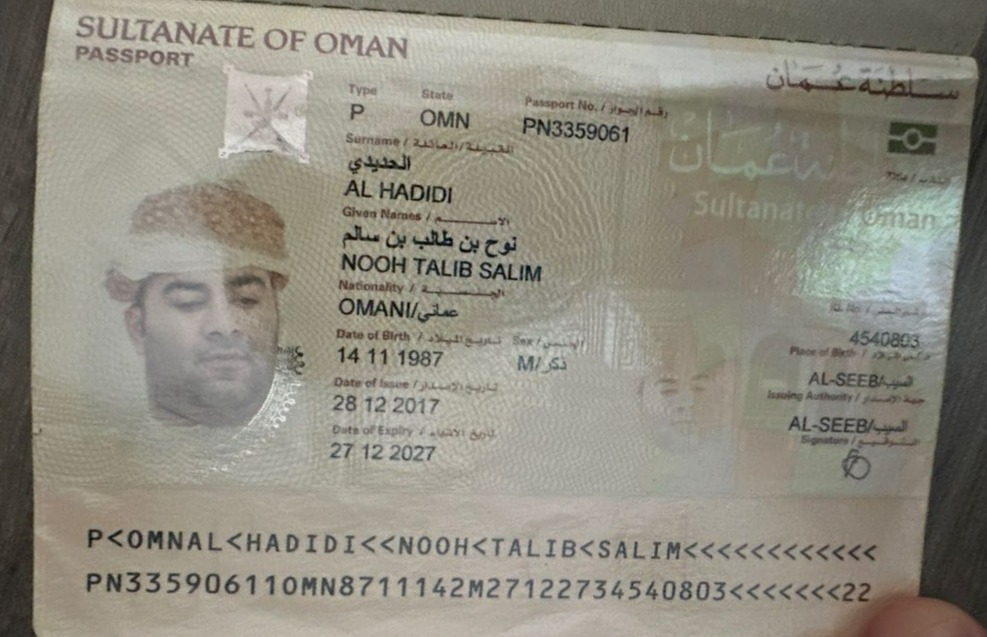

عن نوح الحديدي
من أنا؟
أنا نوح الحديدي، خبير في إمكانية الوصول مع أكثر من 12 عامًا من الخبرة في **الوصول الرقمي، التصميم الشامل، والتكنولوجيا المساعدة**. بصفتي شخصًا كفيفًا، أقدم **وجهة نظر واقعية** في عملي لضمان أن تكون التجارب الرقمية متاحة للجميع.
رحلتي
أنا حاصل على **درجة الماجستير في نظم المعلومات الحاسوبية** من **جامعة ولاية كولورادو**، حيث كنت أول عماني كفيف يحصل على شهادة علمية. على الرغم من التحديات، فقد تمكنت من بناء مسيرة مهنية تربط بين **التكنولوجيا وإمكانية الوصول**.
خبرتي المهنية
عملت مع العديد من الشركات الرائدة، بما في ذلك:
- 📌 **Charter Communications** - مهندس إمكانية الوصول
- 📌 **Google & Apple** - مختبر إمكانية الوصول
- 📌 **Unison Systems Inc.** - مصمم تجربة المستخدم الشامل
- 📌 **Blind Institute of Technology** - مختبر إمكانية الوصول
أخصص عملي في **معايير WCAG 2.1، الامتثال لقانون Section 508، اختبارات قابلية الاستخدام، وتدقيق إمكانية الوصول** لمواقع الويب وتطبيقات الهاتف والبرامج.
مهمتي
هدفي هو إنشاء **تجارب رقمية خالية من العوائق** تمكن الأشخاص ذوي الإعاقة. سواء من خلال **الاستشارات، الأبحاث، أو التحدث العام**، أسعى لجعل الويب أكثر شمولية.